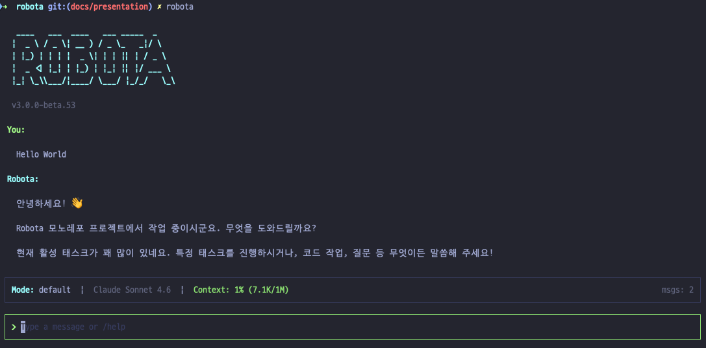

____ ___ ____ ___ _____ _ | _ \ / _ \| __ ) / _ \_ _|/ \ | |_) | | | | _ \| | | || | / _ \ | _ <| |_| | |_) | |_| || |/ ___ \ |_| \_\\___/|____/ \___/ |_/_/ \_\
AI 에이전트 라이브러리를 만들어 배포했다. 이걸로 Claude Code 같은 CLI를 만들 수 있을까?
10개월 전, AI 에이전트를 쉽게 개발할 수 있는 Robota SDK를 만들어 npm에 공개했다. 멀티 AI 프로바이더, 도구, 플러그인, Team 에이전트까지 갖췄다.
Cursor로 바이브 코딩하면서 만들었고, 월 $1,000을 쓰기도 했다. 공개 후 한동안 업데이트를 하지 않았다.
최근 Claude Code를 매일 쓰면서 AGENTS.md라는 개념을 알게 됐고, 내 SDK 위에 코딩 에이전트 CLI를 만들 수 있겠다는 생각이 들었다.
| 계층 | 패키지 | 역할 |
|---|---|---|
| 핵심 라이브러리 | agent-core, sessions, tools, sdk | 실행 루프, 대화 관리, 플러그인 |
| AI 프로바이더 | anthropic / openai / google | Claude, GPT-4, Gemini |
| 플러그인 (9개) | agent-plugin-* | 로깅, 분석, 에러, 성능 등 |
| DAG (8개) | dag-core ~ dag-worker | 워크플로우 실행 엔진 |
| 기타 | team, remote, mcp | 멀티 에이전트, 원격, MCP |
대화가 시작되면 시스템 프롬프트로 주입하는 지시문이다
Claude Code를 쓰면서 AGENTS.md 파일 하나가 에이전트의 행동을 완전히 바꾸는 걸 봤다. 열어보니 그냥 텍스트 파일이었다.
AGENTS.md, CLAUDE.md 같은 파일은 프로젝트 루트에서 탐색한 뒤 시스템 프롬프트에 주입한다. LLM은 이 내용을 프로젝트 규칙으로 인식하고 따른다.
코딩 에이전트 핵심은 결국 이 세 가지다: 시스템 프롬프트 + 도구 + 실행 루프.
프로젝트 폴더에 넣으면 에이전트가 자동으로 인식한다
코딩 에이전트는 프로젝트 루트의 특정 폴더를 탐색해서 스킬, 훅, 설정을 자동으로 로딩한다.
| 경로 | 내용 |
|---|---|
| .agents/skills/ | 프로젝트 전용 스킬 — 슬래시 명령으로 실행 가능 |
| .agents/rules/ | 프로젝트 규칙 — AGENTS.md에서 참조 |
| .agents/tasks/ | 백로그, 진행 중 작업 추적 |
| .claude/settings.json | 훅 설정, 퍼미션 allow/deny 목록 |
| .claude/commands/ | Claude Code 커스텀 명령 |
에이전트의 손발 — 이 6개로 코드를 읽고, 쓰고, 실행한다
처음에는 도구가 수십 개 필요할 줄 알았는데, 실제로는 6개로 거의 모든 코딩 작업을 처리했다.
| 도구 | 역할 | 예시 |
|---|---|---|
| Bash | 셸 명령 실행 | pnpm test, git status, ls |
| Read | 파일 읽기 | 소스 코드, 설정 파일 확인 |
| Write | 파일 생성 | 새 파일 작성 |
| Edit | 파일 부분 수정 | 함수 하나만 고치기 |
| Glob | 파일 검색 | **/*.ts 패턴 매칭 |
| Grep | 내용 검색 | 코드에서 함수 이름 찾기 |
LLM이 이 도구를 자유롭게 조합해서 호출한다. 파일을 읽고, 수정하고, 테스트를 돌리고, 결과를 확인한다. 개발자가 터미널에서 하는 일 그대로다.
LLM 호출 → 도구 실행 → 결과 재주입을 반복한다
LLM을 한 번 호출하면 답이 나오는 줄 알았다. 실제로는 도구를 호출하고, 결과를 돌려주고, 다시 판단하는 루프를 계속 돈다.
| 단계 | 동작 |
|---|---|
| 1 | LLM에 메시지를 보낸다 |
| 2 | 응답에 도구 호출이 포함되면 도구를 실행한다 |
| 3 | 실행 결과를 대화에 추가하고 LLM을 다시 호출한다 |
| 4 | 도구 호출이 없으면 최종 응답을 출력한다 |
각 라운드에서 LLM 응답은 토큰 단위로 실시간 출력(스트리밍)한다. 사용자는 AI가 생각하는 과정을 실시간으로 본다.
어떤 도구를 허용하고 어떤 도구를 차단할지 결정하는 구조
에이전트가 파일을 수정하고 셸 명령을 실행한다. 모든 도구 호출에 대해 실행 전에 권한을 평가한다.
| 모드 | 동작 |
|---|---|
| plan | 읽기만 허용, 수정 전부 차단 |
| default | 위험한 도구는 사용자에게 확인 |
| acceptEdits | 파일 수정 자동 허용, 셸 명령만 확인 |
| bypassPermissions | 전부 자동 허용 (위험) |
도구 실행, 세션 시작/종료, 사용자 입력 등 주요 시점에 끼어든다
코딩 에이전트 동작 흐름 곳곳에 커스텀 로직을 끼워 넣는다. 도구 실행 전후뿐 아니라, 세션 시작/종료, 사용자 입력 직후에도 훅이 동작한다.
| 훅 이벤트 | 시점 | 활용 예시 |
|---|---|---|
| PreToolUse | 도구 실행 전 | 브랜치 보호, 위험 명령 차단 |
| PostToolUse | 도구 실행 후 | 자동 포매팅, 린트 실행 |
| SessionStart | 세션 시작 | 컨텍스트 로딩, 상태 체크 |
| Stop | 세션 종료 | 로그 저장, 정리 작업 |
| UserPromptSubmit | 사용자 입력 후 | 입력 전처리, 검증 |
훅은 셸 커맨드, HTTP 호출, 프롬프트, 에이전트 실행 등 여러 방식으로 구현한다.
파일 수정을 자동으로 추적하고, 언제든 이전 상태로 되돌린다
매 프롬프트마다 파일 상태를 자동으로 스냅샷한다. Write, Edit 도구로 수정한 파일만 추적하고, Bash 명령(rm, mv 등)으로 변경한 파일은 추적하지 않는다.
| 옵션 | 동작 |
|---|---|
| 코드 + 대화 복원 | 파일과 대화 모두 해당 시점으로 되돌린다 |
| 대화만 복원 | 대화를 되돌리되 현재 파일은 유지한다 |
| 코드만 복원 | 파일을 되돌리되 대화는 유지한다 |
| 여기서부터 요약 | 선택 시점 이후 대화를 압축한다 (파일 변경 없음) |
체크포인트는 세션 단위의 빠른 복구용이다. Git을 대체하지 않는다.
폴더에 스킬 파일을 넣으면 슬래시 명령으로 실행한다
스킬은 프로젝트마다 다르게 구성한다. 코드 리뷰, 커밋, 테스트, 문서 생성 등 반복 작업을 스킬로 만들어두면 슬래시 명령 한 번으로 실행한다.
대화가 길어지면 AI가 앞의 내용을 잊는다
도구를 10번 호출하는 프롬프트 하나가 컨텍스트의 절반을 채우는 걸 보고 나서야, 이게 진짜 문제라는 걸 알았다.
AI 모델은 한 번에 처리하는 컨텍스트 크기에 한계를 가진다. Sonnet 4.5는 200K 토큰, Opus 4.6은 1M 토큰. 많아 보이지만, 코딩 에이전트는 컨텍스트에 엄청난 양의 정보를 담는다.
기존 에이전트에 실행 루프, 도구, 퍼미션을 조립했다
여기까지 파악하고 나니 내 SDK로 만들 수 있겠다는 확신이 들었다. AGENTS.md와 실행 루프만 조립했더니 정말 Claude Code처럼 동작했다. 핵심은 기본 도구 6개(Bash, Read, Write, Edit, Glob, Grep)였다. 그리고 이 구조는 Anthropic API에 종속하지 않는다 — OpenAI API를 써도 동일하게 돌아갈 구조다.
기존 Robota SDK 위에 계층을 나눠서 쌓았다:
결국 다 만들어야 한다
Claude Code를 쓰는 사람이 넘어오려면 익숙한 기능을 다 갖춰야 한다. 하나하나 구현하는 건 따분하지만, 빠지면 쓰기 불편하다.
터미널에서 한국어를 쓰는 건 쉽지 않았다
데이터 구조를 바로잡으니 나머지가 풀렸다
기존 에이전트는 API 호출에 필요한 채팅 내용만 대화 목록에 담았다. 하지만 CLI에서 세션을 관리하려면 대화뿐 아니라 도구 실행, 스킬 호출, 이벤트 등 다양한 정보를 함께 기록해야 했다.
agent-core에 IHistoryEntry 타입을 신설하고, 모든 정보를 하나의 타임라인에 담았다:
이 구조 덕분에 세션 이어가기, 히스토리 표시, 이벤트 추적이 모두 단순해졌다.
5가지 방법으로 컨텍스트를 관리한다
| 전략 | 설명 |
|---|---|
| 사전 감지 | 매 라운드 전 토큰 추정 (chars/2). 83.5% 초과 시 경고 |
| 자동 압축 | /compact 또는 자동. AI가 이전 메시지를 요약 |
| 시스템 프롬프트 보존 | AGENTS.md 등은 압축하지 않고 유지 |
| 도구 출력 캡 | 30K 문자 초과 시 자동 절삭 |
| 도구 결과 스킵 | 80% 초과 시 나머지 건너뜀 + LLM에 누락 알림 |
압축 한 번에 토큰 40~60% 절약. 단, 세부 맥락을 잃는다.
생태계와 호환하지 않으면 혼자만 쓰는 도구로 끝난다
마켓플레이스를 등록하고, 거기서 플러그인을 설치/제거할 수 있다. Claude Code와 동일한 경로 구조를 지원한다.
서브에이전트도 구현했다. Claude Code의 스킬 파일 중 프론트매터에 context: fork가 있으면 메인 대화와 분리한 별도 세션에서 실행한다.
실제로 코딩 작업에 사용해 봤고, 일상 개발 작업을 할 수 있는 수준이다
쓸 수 있다. 이제 Robota를 Robota CLI로 개발할 수 있다.
단, 조건이 있다.
대신 내가 만든 라이브러리 위에서 돌아가므로 프로바이더 교체, 커스터마이징, 확장이 자유롭다.
9일 동안 385커밋, 53번의 npm 릴리즈. 만드는 과정에서 에이전트 작동 원리를 훨씬 정확하게 이해했다.
이제 이 기반 위에서 만들고 싶은 것이 계속 떠오른다.
하나씩 만들어보겠습니다.

궁금한 점이나 피드백이 있다면 GitHub에 남겨주세요.